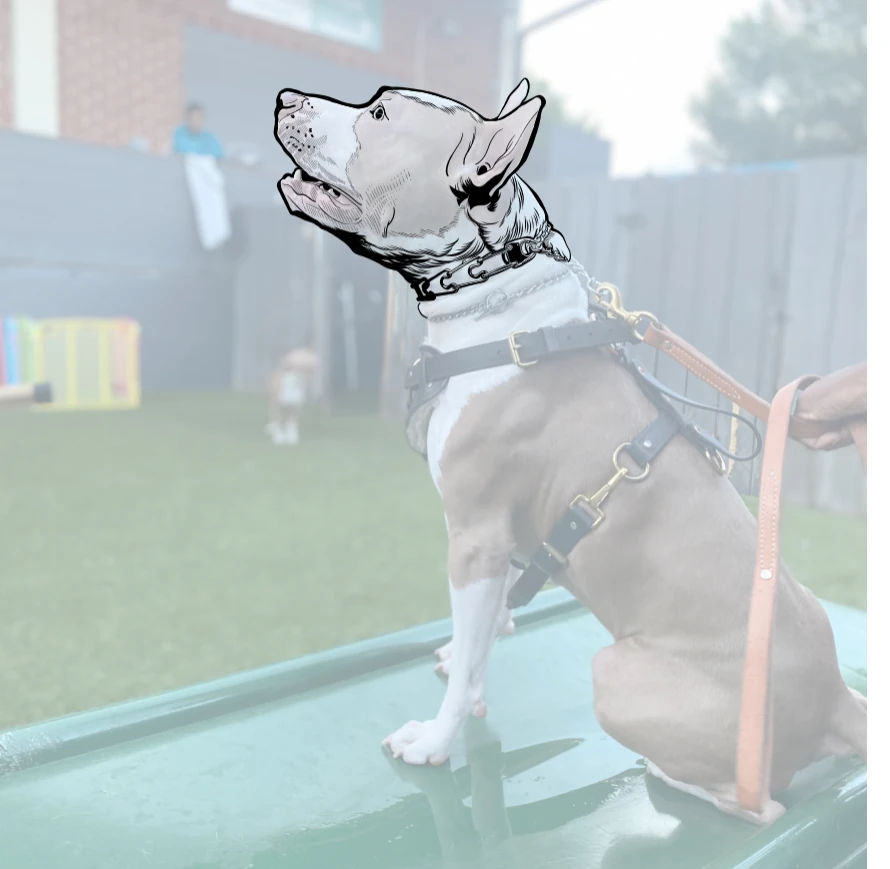
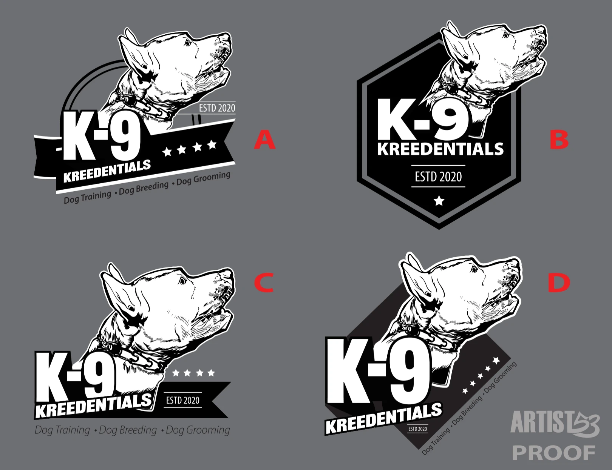
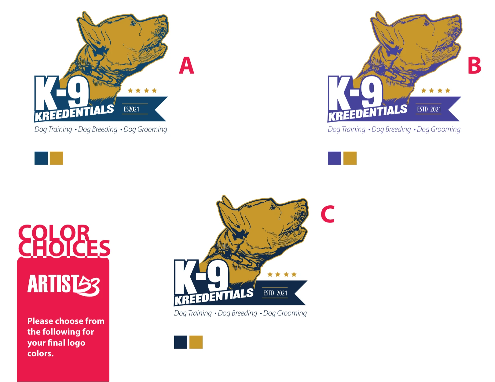
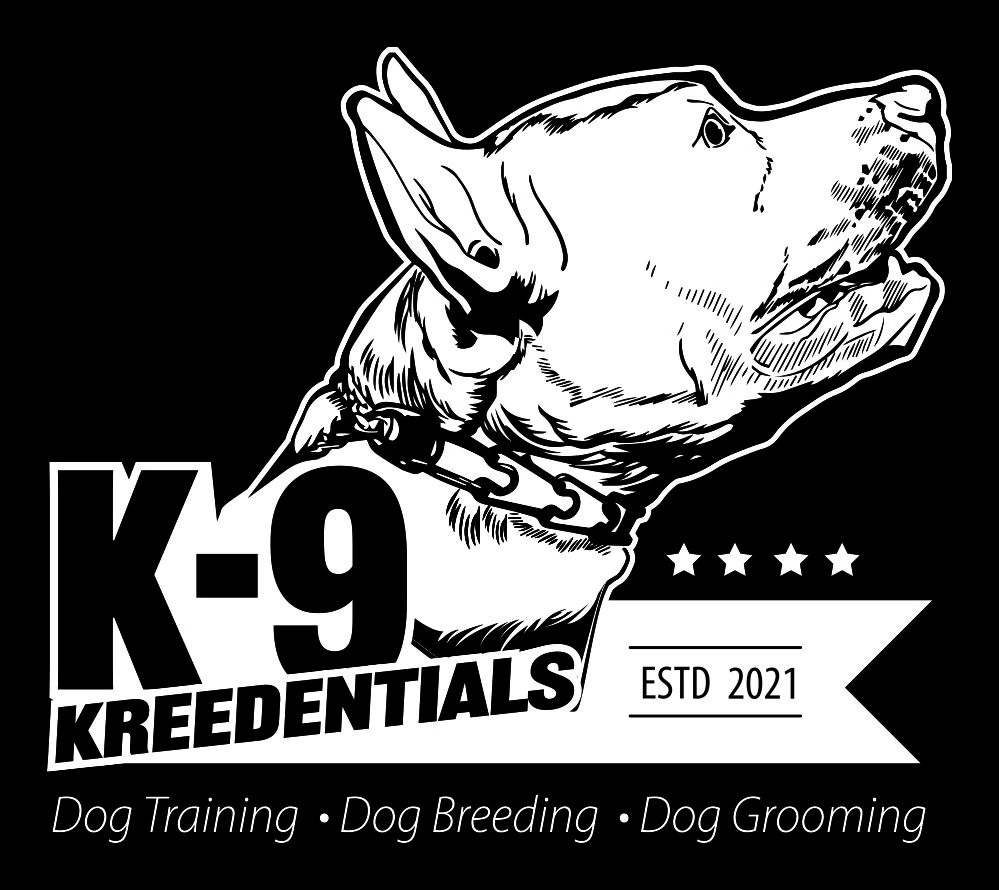
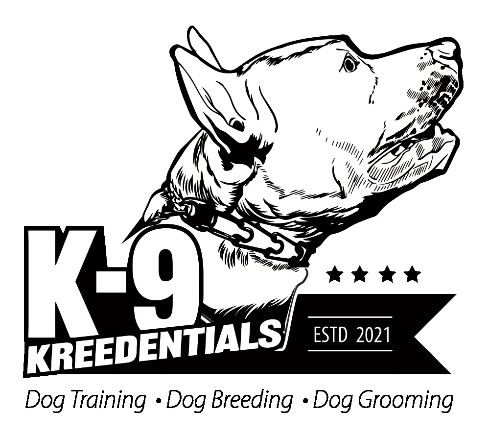
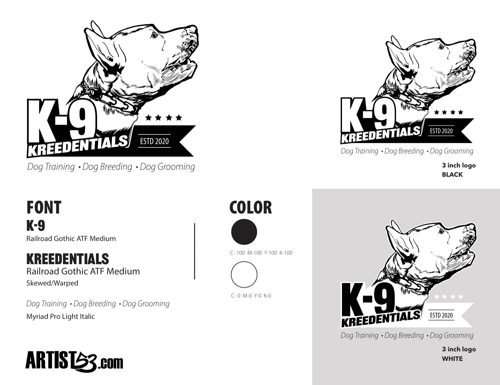

Logo Identity Case Study
K-9 Kreedentials
An illustrative logo system created for a dog training, breeding and grooming business, built around an illustrated canine mark and a strong black and white visual foundation.
View The Project Back To LogosProject Overview
A Working Dog Identity With Authority
The goal was to create a logo that felt disciplined, dependable and immediately connected to professional dog services. The illustrated dog portrait gives the brand personality, while the heavy typography, banner shape and stars create a badge like identity that can work across apparel, signage, social media and printed materials.
01 — Sketch Development
Starting With The Dog
The identity began by developing the client's dog into the illustrated centerpiece of the mark. Establishing the character first gave the rest of the logo system a strong visual anchor.

02 — Enclosure Exploration
Testing Different Badge Structures
With the dog established, multiple enclosures were explored around the illustration. Ribbon, shield and angled badge directions tested how the typography, character and service messaging could lock together as one recognizable mark.

03 — Color Palette Testing
Finding The Right Color System
After the structure was established, blue, purple and gold combinations were tested to find a palette that felt professional and premium while keeping the illustrated dog and bold typography easy to read.

04 — Logo Finals
The Final Identity System
The finished identity holds together in full color and in one color applications, giving K-9 Kreedentials a flexible logo system for uniforms, vinyl, signage, embroidery, social media and print.


